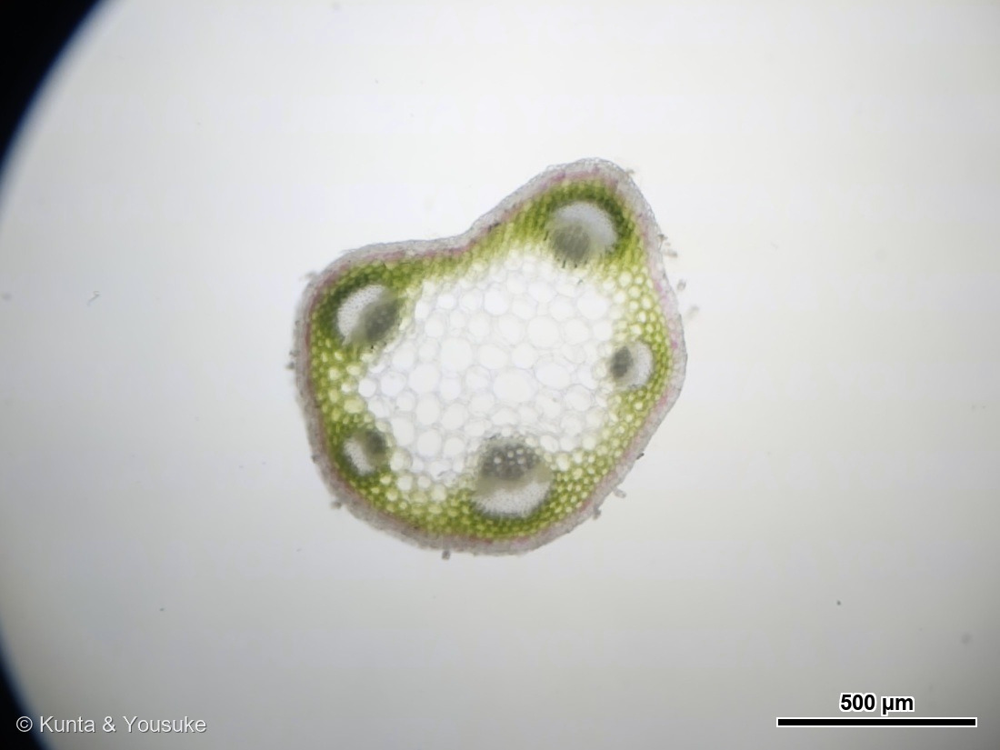
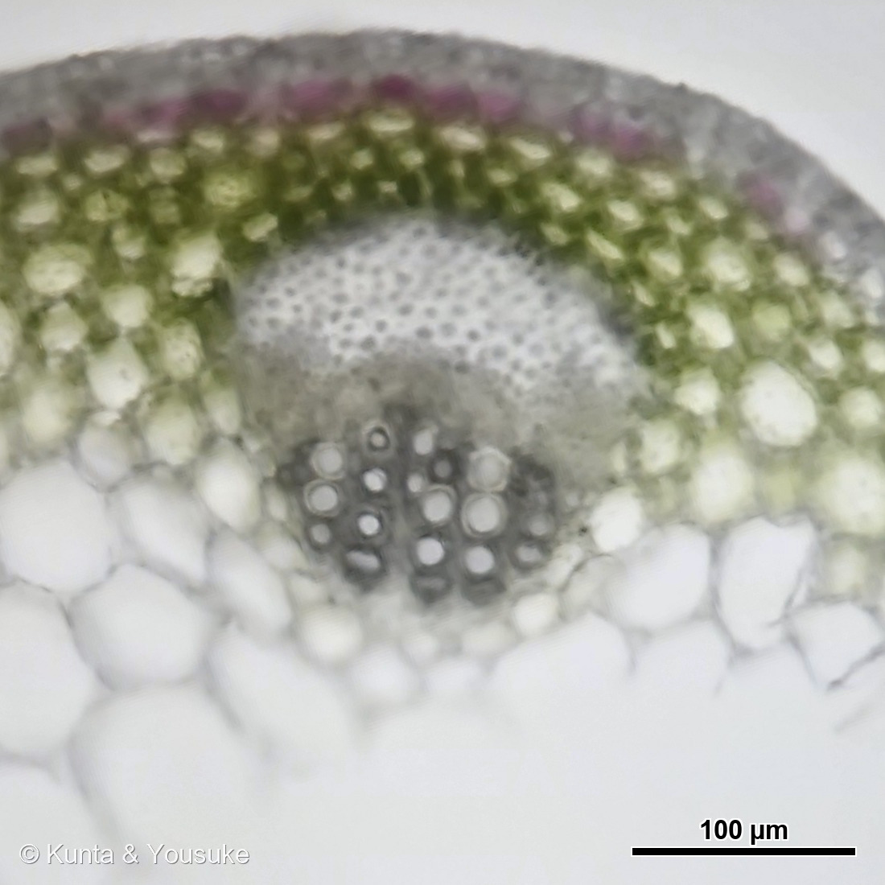
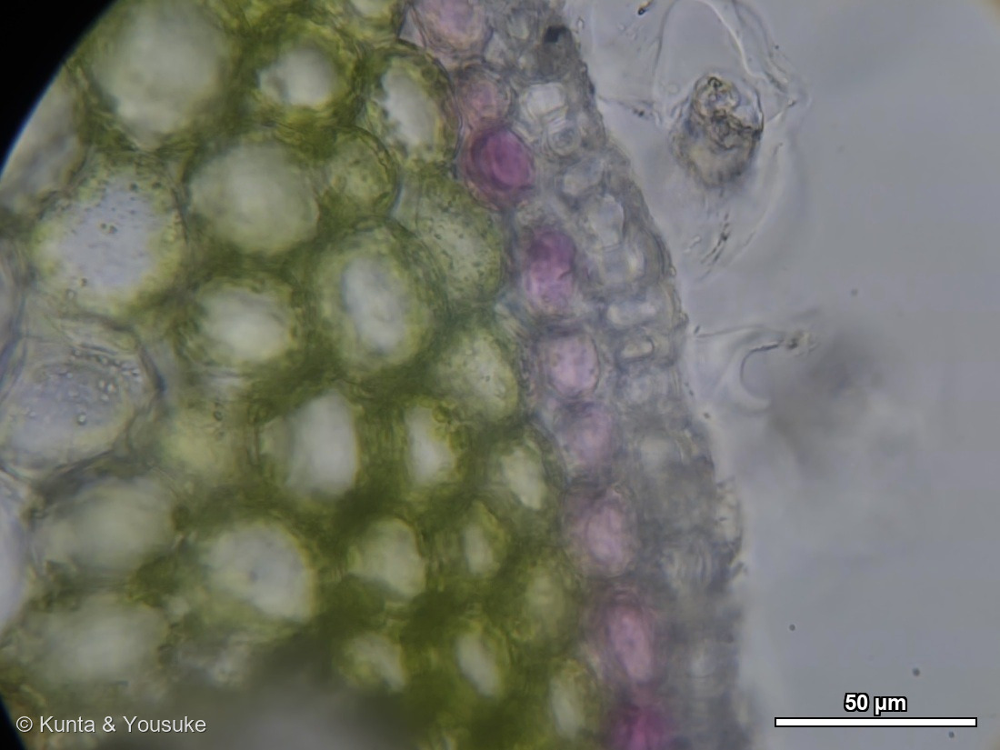

地図を読み込んでいるよ…
🔍 写真も地図も、押しているあいだ拡大して見られるよ（スマホは指を置いてすこし待ってね）。
🌍 の地図＝この子がもともと自生している場所を緑に。ヨーロッパ〜西アジア（日本へは牧草・緑肥として渡来し帰化）。
日本の野原にいくらでもいるけれど、日本は塗っていない——この子は牧草として連れてこられた外国の子だから。
⚠ 地図は国（日本と中国だけ県・省）までしか塗れないから、ほんとうの分布より広く見えていることがあるよ。地図はだいたいの場所。正確なところは、上の文を見てね。
シロツメクサ
Trifolium repens L. （カラーリーフの園芸品種）
別名 · クローバー／オランダゲンゲ
マメ科 · Fabaceae
名前と学名の由来
- Trifolium（トリフォリウム）＝ラテン語の「tri（3）」＋「folium（葉）」で、「三つ葉」。クローバーの三小葉にちなむ。
- repens（レペンス）＝ラテン語で「這う・匍匐する」。ほふく茎が地面をはって広がる性質から。
この植物のこと
- マメ科シャジクソウ属（Trifolium）の多年草。ヨーロッパ〜西アジア原産。日本へは牧草・緑肥として入り、今は野原や道ばたにごくふつうに帰化している（ふつうのシロツメクサ）。
- 和名「白詰草」は、昔ガラス製品を運ぶとき、乾かしたこの草を詰め物（緩衝材）に使ったことに由来。花が白いことにもかかる。
- 三つ葉が基本。葉に白いV字の模様（watermark）が出るのがふつうだが、この株はカラーリーフの園芸品種で、白〜クリームの斑・緑・赤むらさきの模様が強く出ている。観葉用に選抜されたもので、「珍しい」見た目はそのため。写真には四つ葉もまじっている。
- この模様の遺伝は意外に複雑。白いV字は色素でなく“構造”（葉の中の空気の層）で、V遺伝子座（5番染色体）＋微働遺伝子6個で決まる。赤むらさきの模様はアントシアニン色素で、R2R3-MYB転写因子（RED LEAFなど）が支配。白系と赤系は別のしくみで、この品種は両方を強く出している。（→資料フォルダに論文と読書メモ）
- 花は白い球状の頭花（小さな蝶形花がたくさん集まったもの）。マメ科なので根に根粒菌が共生し、空気中の窒素を固定して土を肥やす（だから緑肥に使われる）。
- 四つ葉になることがあり、幸運の象徴。シロツメクサは異質四倍体（二倍体2種 T. occidentale×T. pallescens の交雑＋倍加、2n=4x=32）という複雑な生い立ちの植物でもある。
⭐ 顕微鏡で見た葉柄 ── 空き地の“ふつうの緑”のシロツメクサ
②〜④の顕微鏡写真は、①のカラーリーフ品種ではなく、空き地に生えていた“ふつうの緑のシロツメクサ”（同じ種 Trifolium repens）の葉柄（葉の柄）を手で薄く切った横断面だよ（撮影 2026.07.21）。対物ミクロメーターで較正して、右下にスケールバーを入れてある。
- ⭐② 全体（4倍・バー500µm）：丸い葉柄の断面。まわりを緑の皮層（葉緑体をもつ細胞）が取り巻き、中心に大きくて透明な髄（支え・貯蔵の柔組織）。その境目に、維管束（水と養分の通り道）がリング状にいくつも並ぶ。いちばん外のうすいピンクの線が表皮。葉柄の太さはおよそ0.9mmだよ。
- ⭐③ 維管束の拡大（10倍・バー100µm）：導管が下になるように向きをそろえたよ。下の大きな穴のあいた円い束＝道管（導管・木部）が水を根から運び、その上の細かい点々＝師管（師部）が葉で作った糖を運ぶ。道管が内（髄側）・師管が外（表皮側）の並立維管束——マメ科の葉柄の典型だね。
- ⭐④ 細胞の拡大（40倍・バー50µm）：細胞ひとつひとつが見える。緑の粒＝葉緑体（皮層の細胞）と、表皮に近いピンク〜赤むらさきの細胞＝アントシアニン。⭐①のカラーリーフ品種の赤むらさきも正体はこのアントシアニンで、“ふつうの緑”の子でも、表皮のふちにはちゃんと色素が少し入っているのが見えるよ。品種の派手さは、この色素を「うんと強く出すようにした」ものなんだね。
スケールバーは、対物ミクロメーター（1mm/100分割＝1目盛10µm）で較正した自作ツール（接眼10倍・カメラ3倍ズーム固定・対物4/10/40倍）で焼きこんだよ。
参考：Kate Greenaway Language of Flowers(1884)・Project Gutenberg／花言葉-由来
花言葉
- 日本で
- 白クローバー＝私を思って／約束。四つ葉＝幸運／私のものになって。
- 英語圏
- Clover, White — Think of me.（私を思って）
Clover, Four-leaved — Be mine.（私のものになって）
Clover, Red — Industry.（勤勉）Greenaway 1884
なぜ、そうなったか：この子は、花言葉がどこから来たのかが、いちばんはっきり見える一枚だと思う。日本の「私を思って」は think of me の、「私のものになって」は be mine の、そのままの訳。赤クローバーの「勤勉」も industry のまま。三つとも、ずれていない。
つまり日本の花言葉は、19世紀イギリスで流行った language of flowers を、明治のころにまるごと受け取ったもの——その跡が、この草にそのまま残っている。
そして、この写真には四つ葉が写っている。「幸運」と「私のものになって」の子が、ちゃんとここにいるよ。
参考：Kate Greenaway Language of Flowers(1884)・Project Gutenberg／花言葉-由来